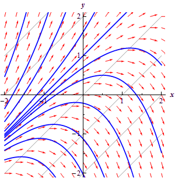

This topic is given its own section for a couple of
reasons. First, understanding direction
fields and what they tell us about a differential equation and its solution is
important and can be introduced without any knowledge of how to solve a
differential equation and so can be done here before we get into solving them. So, having some information about the
solution to a differential equation without actually having the solution is a
nice idea that needs some investigation.
Next, since we need a differential equation to work with
this is a good section to show you that differential equations occur naturally
in many cases and how we get them.
Almost every physical situation that occurs in nature can be described
with an appropriate differential equation.
The differential equation may be easy or difficult to arrive at
depending on the situation and the assumptions that are made about the
situation and we may not ever be able to solve it, however it will exist.
The process of describing a
physical situation with a differential equation is called modeling. We will be looking
at modeling several times throughout this class.
One of the simplest physical situations to think of is a
falling object. So let’s consider a
falling object with mass m and derive
a differential equation that, when solved, will give us the velocity of the
object at any time, t. We will assume that only gravity and air
resistance will act upon the object as it falls. Below is a figure showing the forces that
will act upon the object.
Before defining all the terms in this problem we need to set
some conventions. We will assume that
forces acting in the downward direction are positive forces while forces that
act in the upward direction are negative.
Likewise, we will assume that an object moving downward (i.e. a falling object) will have a positive
velocity.
Now, let’s take a look at the forces shown in the diagram
above.  is the force due to gravity and is given by where
g is the acceleration due to
gravity. In this class I use g = 9.8 m/s2 or g = 32 ft/s2 depending on
whether we will use the metric or British system. is
the force due to air resistance and for this example we will assume that it is
proportional to the velocity, v, of
the mass. Therefore the force due to air
resistance is then given by ,
where . Note that the “”
is required to get the correct sign on the force. Both γ and v
are positive and the force is acting upward and hence must be negative. The “”
will give us the correct sign and hence direction for this force.
is the force due to gravity and is given by where
g is the acceleration due to
gravity. In this class I use g = 9.8 m/s2 or g = 32 ft/s2 depending on
whether we will use the metric or British system. is
the force due to air resistance and for this example we will assume that it is
proportional to the velocity, v, of
the mass. Therefore the force due to air
resistance is then given by ,
where . Note that the “”
is required to get the correct sign on the force. Both γ and v
are positive and the force is acting upward and hence must be negative. The “”
will give us the correct sign and hence direction for this force.
Recall from the previous section that Newton’s Second Law of motion can be written
as
where F(t,v) is
the sum of forces that act on the object and may be a function of the time t and the velocity of the object, v.
For our situation we will have two forces acting on the object gravity, .
acting in the downward direction and hence will be positive, and air
resistance, , acting in the upward
direction and hence will be negative.
Putting all of this together into Newton’s Second Law gives the following.
To simplify the differential equation let’s divide out the
mass, m.
(1)
This then is a first order linear differential equation
that, when solved, will give the velocity, v
(in m/s), of a falling object of mass m
that has both gravity and air resistance acting upon it.
In order to look at direction fields (that is after all the
topic of this section....) it would be helpful to have some numbers for the
various quantities in the differential equation. So, let’s assume that we have
a mass of 2 kg and that γ =
0.392. Plugging this into (1) gives the following
differential equation.
Let's take a geometric view of this differential equation.
Let's suppose that for some time, t,
the velocity just happens to be v = 30 m/s. Note that we’re not saying that the velocity
ever will be 30 m/s. All that we’re
saying is that let’s suppose that by some chance the velocity does happen to be
30 m/s at some time t. So, if the velocity does happen to be 30 m/s
at some time t we can plug v = 30 into (2) to
get.
Recall from your Calculus I course that a positive
derivative means that the function in question, the velocity in this case, is
increasing, so if the velocity of this object is ever 30m/s for any time t the velocity must be increasing at
that time.
Also, recall that the value of the derivative at a
particular value of t
gives the slope of the tangent line to the graph of the function at that time, t. So, if for some time t the velocity happens to be 30 m/s the slope of the tangent line
to the graph of the velocity is 3.92.
We could continue in this fashion and pick different values
of v
and compute the slope of the tangent line for those values of the velocity.
However, let's take a slightly more organized approach to this. Let's first
identify the values of the velocity that will have zero slope or horizontal
tangent lines. These are easy enough to find. All we need to do is set the
derivative equal to zero and solve for v.
In the case of our example we will have only one value of
the velocity which will have horizontal tangent lines, v = 50 m/s. What this means
is that IF (again, there’s that word if), for some time t, the velocity happens to be 50 m/s then the
tangent line at that point will be horizontal. What the slope of the tangent
line is at times before and after this point is not known yet and has no
bearing on the slope at this particular time, t.
So, if we have v = 50,
we know that the tangent lines will be horizontal. We denote this on an axis
system with horizontal arrows pointing in the direction of increasing t at the level of v = 50
as shown in the following figure.
Now, let's get some tangent lines and hence arrows for our
graph for some other values of v.
At this point the only exact slope that is useful to us is where the slope
horizontal. So instead of going after exact slopes for the rest of the graph we
are only going to go after general trends in the slope. Is the slope increasing
or decreasing? How fast is the slope increasing or decreasing? For this example those types of trends are
very easy to get.
First, notice that the right hand side of (2)
is a polynomial and hence continuous. This means that it can only change sign
if it first goes through zero. So, if the derivative will change signs (no
guarantees that it will) it will do so at v = 50 and the only place that it may
change sign is v = 50.
This means that for v >
50 the slope of the tangent lines to the velocity will have the
same sign. Likewise, for v <
50 the slopes will also have the same sign. The slopes in these ranges may have (and
probably will) have different values, but we do know what their signs must be.
Let's start by looking at v < 50. We saw earlier
that if v = 30
the slope of the tangent line will be 3.92, or positive. Therefore, for all
values of v <
50 we will have positive slopes for the tangent lines. Also, by
looking at (2)
we can see that as v
approaches 50, always staying less than 50, the slopes of the tangent lines
will approach zero and hence flatten out. If we move v away from 50, staying less than 50, the slopes
of the tangent lines will become steeper. If you want to get an idea of just how
steep the tangent lines become you can always pick specific values of v and compute values
of the derivative. For instance, we know that at v = 30 the derivative is
3.92 and so arrows at this point should have a slope of around 4. Using this
information we can now add in some arrows for the region below v = 50
as shown in the graph below.
Now, let’s look at v >
50. The first thing to do is to find out if the slopes are
positive or negative. We will do this the same way that we did in the last bit,
i.e. pick a value of v, plug this into (2)
and see if the derivative is positive or negative. Note, that you should NEVER
assume that the derivative will change signs where the derivative is zero. It
is easy enough to check so you should always do so.
We need to check the derivative so let's use v = 60.
Plugging this into (2)
gives the slope of the tangent line as -1.96, or negative. Therefore, for all
values of v >
50 we will have negative slopes for the tangent lines. As with v < 50, by looking at (2)
we can see that as v
approaches 50, always staying greater than 50, the slopes of the tangent lines
will approach zero and flatten out. While moving v away from 50 again, staying greater than 50,
the slopes of the tangent lines will become steeper. We can now add in some
arrows for the region above v = 50
as shown in the graph below.
This graph above is called the direction field for the differential
equation.
So, just why do we care about direction fields? There are
two nice pieces of information that can be readily found from the direction
field for a differential equation.
- Sketch of solutions. Since the
arrows in the direction fields are in fact tangents to the actual
solutions to the differential equations we can use these as guides to
sketch the graphs of solutions to the differential equation.
- Long Term Behavior. In many cases
we are less interested in the actual solutions to the differential
equations as we are in how the solutions behave as t increases. Direction fields, if we can
get our hands on them, can be used to find information about this long
term behavior of the solution.
So, back to the direction field for our differential
equation. Suppose that we want to know what the solution that has the value v(0) = 30
looks like. We can go to our direction field and start at 30 on the vertical
axis. At this point we know that the solution is increasing and that as it
increases the solution should flatten out because the velocity will be
approaching the value of v =
50. So we start drawing an increasing solution and when we hit an
arrow we just make sure that we stay parallel to that arrow. This gives us the
figure below.
To get a better idea of how all the
solutions are behaving, let's put a few more solutions in. Adding some more
solutions gives the figure below. The set of solutions that we've graphed below
is often called the family of solution curves
or the set of integral curves.
The number of solutions that is plotted when plotting the integral curves
varies. You should graph enough solution curves to illustrate how solutions in
all portions of the direction field are behaving.
Now, from either the direction field, or the direction field
with the solution curves sketched in we can see the behavior of the solution as
t increases. For our falling object, it looks like all of
the solutions will approach v = 50 as
t increases.
We will often want to know if the behavior of the solution
will depend on the value of v(0). In this case the behavior of the solution
will not depend on the value of v(0),
but that is probably more of the exception than the rule so don’t expect that.
Let’s take a look at a more complicated example.
|
Example 1 Sketch
the direction field for the following differential equation. Sketch the set
of integral curves for this differential equation. Determine how the
solutions behave as and if this behavior depends on the value of
y(0)
describe this dependency.
Solution
First, do not worry about where this differential equation
came from. To be honest, we just made
it up. It may, or may not describe an
actual physical situation.
This differential equation looks somewhat more complicated
than the falling object example from above. However, with the exception of a
little more work, it is not much more complicated. The first step is to
determine where the derivative is zero.
We can now see that we have three values of y in which the
derivative, and hence the slope of tangent lines, will be zero. The
derivative will be zero at y
= -1, 1, and 2. So, let's start our direction field with
drawing horizontal tangents for these values. This is shown in the figure
below.
Now, we need to add arrows to the four regions that the
graph is now divided into. For each of these regions I will pick a value of y in that region and
plug it into the right hand side of the differential equation to see if the
derivative is positive or negative in that region. Again, to get an accurate
direction fields you should pick a few more over values over the whole range
to see how the arrows are behaving over the whole range.
y <
-1
In this region we can use y
= -2 as the test point. At this point we have . So, tangent lines in this region will have
very steep and positive slopes. Also as the slopes will flatten out while staying
positive. The figure below shows the direction fields with arrows in this
region.
-1 < y < 1
In this region we can use y = 0 as the test point.
At this point we have . Therefore, tangent lines in this region will
have negative slopes and apparently not be very steep. So what do the arrows
look like in this region? As staying less than 1 of course, the slopes
should be negative and approach zero. As we move away from 1 and towards -1 the
slopes will start to get steeper (and stay negative), but eventually flatten
back out, again staying negative, as since the derivative must approach zero at
that point. The figure below shows the direction fields with arrows added to
this region.
1 < y < 2
In this region we will use y = 1.5 as the test
point. At this point we have . Tangent lines in this region will also have
negative slopes and apparently not be as steep as the previous region. Arrows
in this region will behave essentially the same as those in the previous
region. Near y = 1 and y = 2 the slopes will flatten out and
as we move from one to the other the slopes will get somewhat steeper before
flattening back out. The figure below shows the direction fields with arrows
added to this region.
y > 2
In this last region we will use y = 3 as the test point.
At this point we have . So, as we saw in the first region tangent
lines will start out fairly flat near y
= 2 and then as we move way from y
= 2 they will get fairly steep.
The complete direction field for this differential
equation is shown below.
Here is the set of integral curves for this differential
equation. Note that due to the steepness of the solutions in the lowest
region and the software used to generate these images I was unable to include
more than one solution curve in this region.
Finally, let's take a look at long term behavior of all
solutions. Unlike the first example,
the long term behavior in this case will depend on the value of y at t = 0.
By examining either of the previous two figures we can arrive at the
following behavior of solutions as .
Do not forget to acknowledge what the horizontal
solutions are doing. This is often the
most missed portion of this kind of problem.
|


In both of the examples that we've worked to this point the right
hand side of the derivative has only contained the function and NOT the
independent variable. When the right hand side of the differential equation
contains both the function and the independent variable the behavior can be
much more complicated and sketching the direction fields by hand can be very
difficult. Computer software is very handy in these cases.
In some cases they aren’t too difficult to do by hand
however. Let’s take a look at the
following example.
|
Example 2 Sketch
the direction field for the following differential equation. Sketch the set
of integral curves for this differential equation.
Solution
To sketch direction fields for this kind of differential
equation we first identify places where the derivative will be constant. To
do this we set the derivative in the differential equation equal to a
constant, say c.
This gives us a family of equations, called isoclines,
that we can plot and on each of these curves the derivative will be a
constant value of c.
Notice that in the previous examples we looked at the
isocline for c
= 0 to get the direction field started. For our case the family
of isoclines is.
The graph of these curves for
several values of c is shown
below.
Now, on each of these lines, or isoclines, the derivative
will be constant and will have a value of c. On the c = 0 isocline the
derivative will always have a value of zero and hence the tangents will all
be horizontal. On the c
= 1 isocline the tangents will always have a slope of 1, on the
c
= -2 isocline the tangents will always have a slope of -2, etc. Below is a few tangents put in for each
of these isoclines.
To add more arrows for those areas between the isoclines
start at say, c
= 0 and move up to c
= 1 and as we do that we increase the slope of the arrows
(tangents) from 0 to 1. This is shown in the figure below.
We can then add in integral curves as we did in the
previous examples. This is shown in the figure below.

|